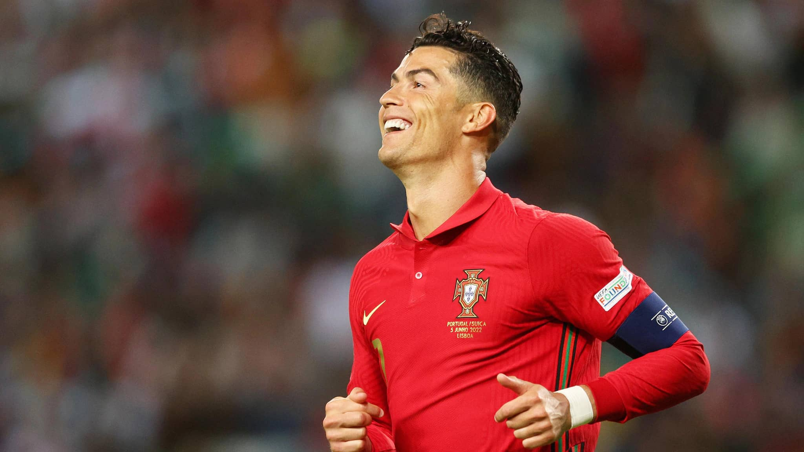
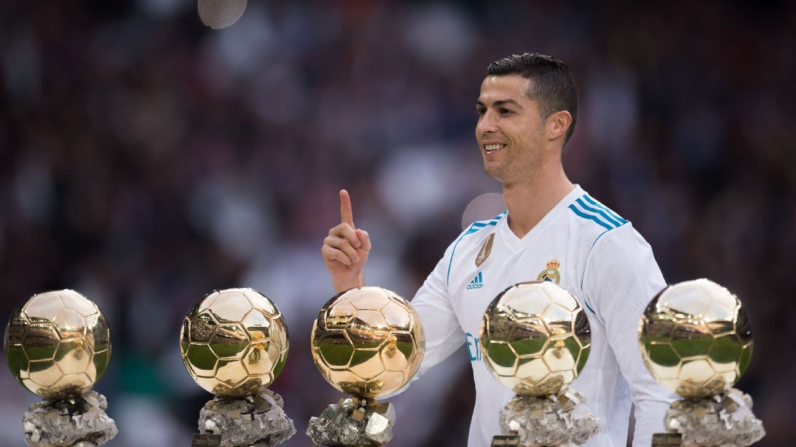

Cristiano Ronaldo dos Santos Aveiro, más conocido como Cristiano Ronaldo, es un futbolista portugués nacido en Funchal, Madeira, Portugal,el 5 de febrero de 1985.Es considerado uno de los mejores de lanteros del panorama actual y ha obtenido numerosos títulos y distinciones indivi duales a lo largo desu trayectoria en el Manchester United (2003-2009) y en el Real Madrid (desde 2009).
Ronaldo nació en un barrio obrero en la isla portuguesa de Madeira, en el seno de una familia de tres hermanos. Desde muy pequeño mostró sus excepcionales aptitudes para el fútbol: a los ocho años jugaba en el equipo de La Andorinha, y a los diez se lo disputaban ya los dos equipos mayores de la isla, el Marítimo y el Clube Desportivo Nacional; el padre del jugador decidió que ingresara en este último. Allí progresó de forma meteórica, y a los 16 años, tras realizar unas prueba, se incorporó al Sporting de Lisboa y se trasladó a vivir a la capital portuguesa
Cristiano Ronaldo es uno de los futbolistas más exitosos de la historia. Ha ganado varios títulos importantes a lo largo de su carrera, incluyendo cinco premios Ballon d’Or / FIFA Ballon d’Or, el mayor número para un jugador europeo . También tiene el récord de la mayoría de los goles y asistencias en la UEFA Champions League (140 y 42 respectivamente), la mayoría de los goles en la UEFA European Championship (14), su etapa de clasificación (40), y la Copa Mundial de Clubes de la FIFA (7) . Además, ha ganado la Eurocopa 2016 y la Liga de Naciones de la UEFA 2019 con la selección de fútbol de Portugal .
